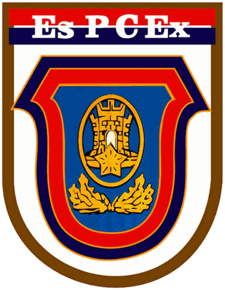
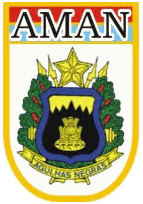
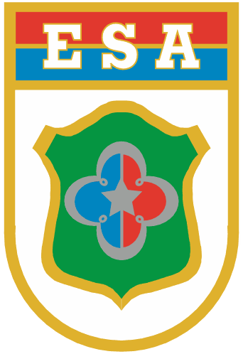
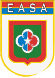
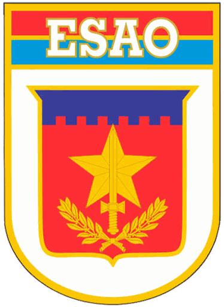
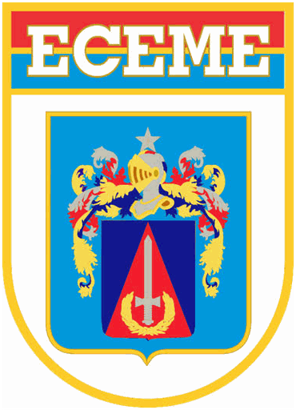
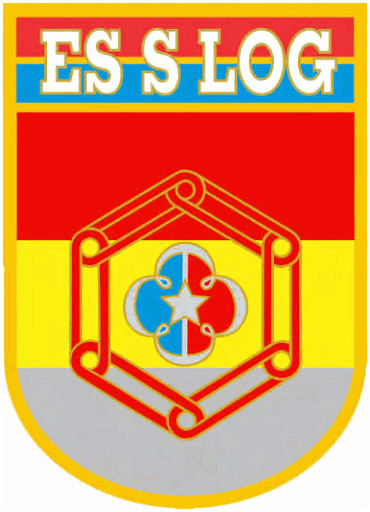
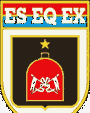

DECEx
Departamento de Educação e Cultura do Exército
Escolas, centros, cursos e notícias do ensino da Exército Brasileiro.

Instituições subordinadas

EsPCExEscola Preparatória de Cadetes do Exército
Preparação para a AMAN
Abrir site →
AMANAcademia Militar das Agulhas Negras
Formação de oficiais
Abrir site →
ESAEscola de Sargentos das Armas
Formação de sargentos
Abrir site →
EASAEscola de Aperfeiçoamento de Sargentos
Aperfeiçoamento de sargentos
Abrir site →
EsAOEscola de Aperfeiçoamento de Oficiais
Aperfeiçoamento de capitães
Abrir site →
ECEMEEscola de Comando e Estado-Maior do Exército
Estudos de Estado-Maior
Abrir site →
EsSLogEscola de Sargentos de Logística
Formação logística
Abrir site →
EsEqExEscola de Equitação do Exército
Formação equestre
Abrir site →EsEFExEscola de Educação Física do Exército
Educação física
Abrir site →EsIEEscola de Instrução Especializada
Instrução especializada
Abrir site →Noticiário
Sem notícia.